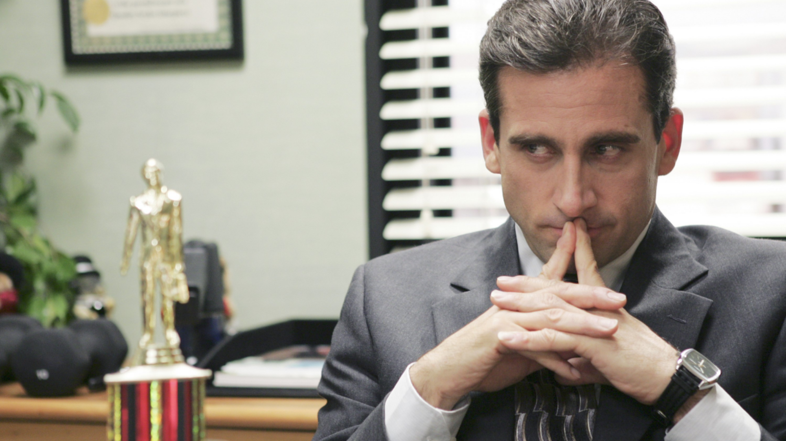
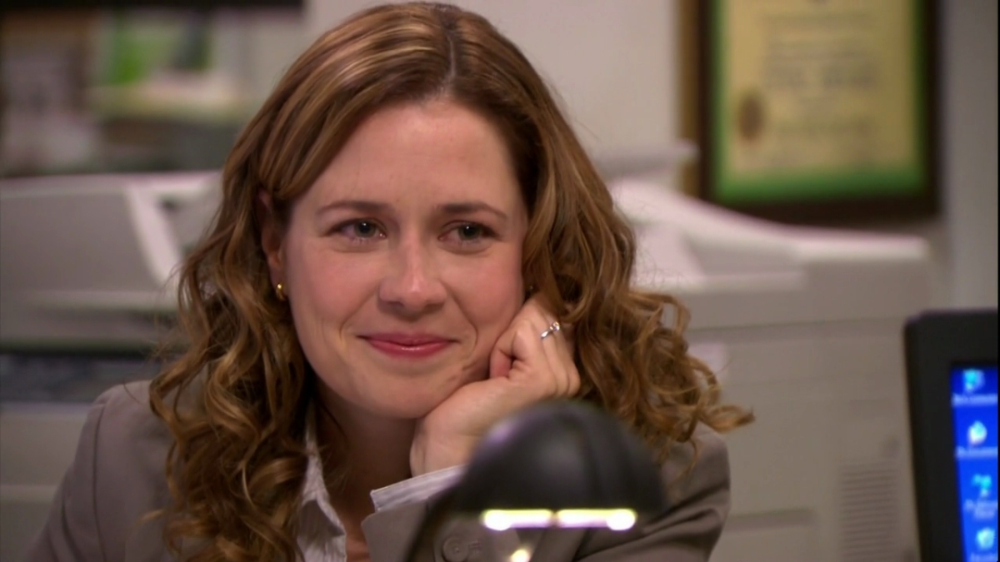
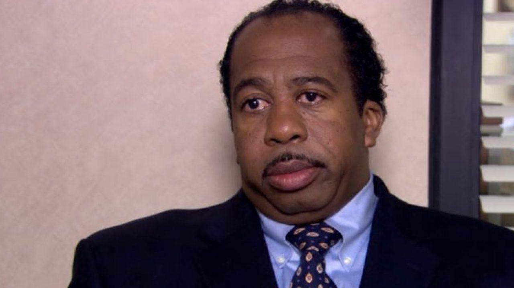
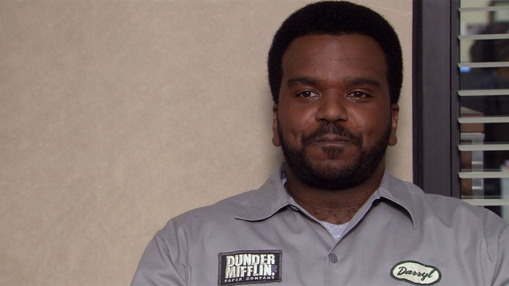
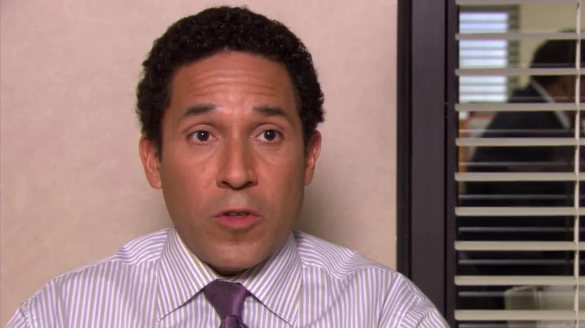
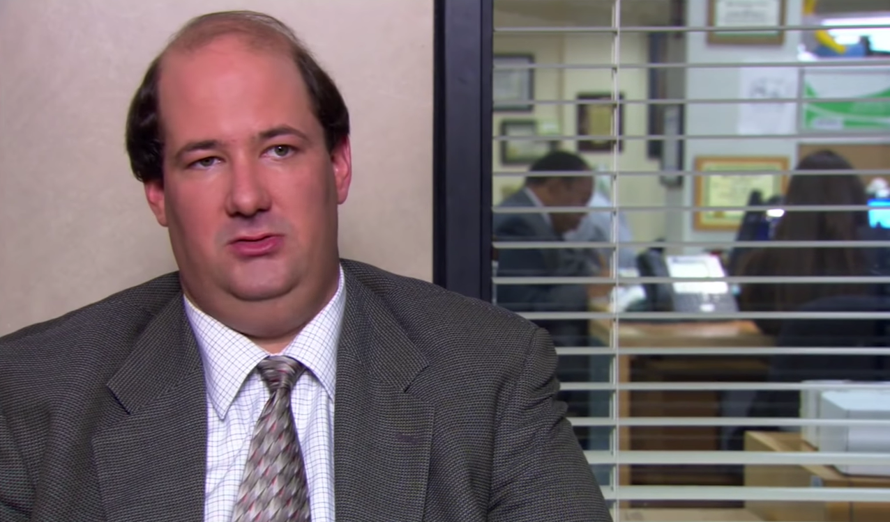
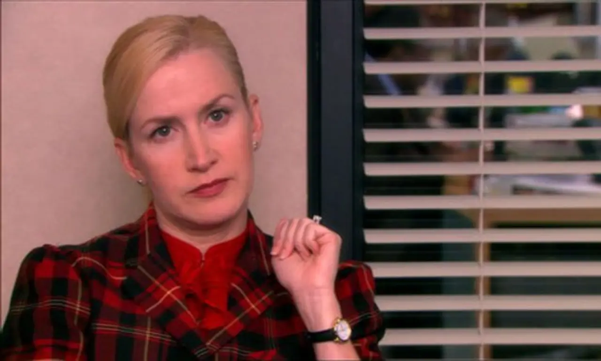

Conheça o elenco de The Office!
Steve Carell (Michael Scott)
Gerente regional da filial de Scranton da Dunder Mifflin Paper Company, acha que é o melhor amigo de todos no escritório; os funcionários, no entanto, sentem o contrário.
Dwight Schrute (Rainn Wilson)
Assistente do gerente regional, é um premiado vendedor e voluntário reserva do xerife de Lackawanna, conhecido por sua personalidade autoritária e fanatismo por ficção científica. Há uma rivalidade constante entre Jim e Dwight, cujas personalidades contrastantes frequentemente levam a conflitos
Jim Halpert (John Krasinski)
Um dos vendedores da Dunder Mifflin, tem uma forte amizade marcada por uma tensão romântica, com a recepcionista Pam.
Pam Beesly (Jenna Fischer)
Recepcionista da Dunder Mifflin, começa a série como noiva do entregador Roy
Ryan Howard (B.J. Novak)
Estagiário e estudante de administração

Stanley Hudson (Leslie David Baker)
Vendedor. Mal humorado, participa de má-vontade das frequentes reuniões promovidas por Michael, ora cochilando, ora fazendo palavras-cruzadas.
Kelly Kapoor (Mindy Kaling)
Responsável pelo atendimento ao cliente. Fútil e faladora, tem ascendência indiana

Darryl Philbin (Craig Robinson)
Entregador. Responsável pelo depósito.
Toby Flenderson (Paul Lieberstein)
Representante do departamento pessoal. Acanhado e inflexível no cumprimento das diretrizes da matriz (a quem é diretamente subordinado), é visto com antipatia por Michael

Oscar Martinez (Oscar Nunez)
Contador. Sua homossexualidade e ascendência mexicana fazem dele alvo constante das piadas de Michael.
Kevin Malone (Brian Baumgartner)
Contador. Tapado e obeso, demonstra sempre um humor juvenil. Baterista nas horas vagas.
Phyllis Lapin (Phyllis Smith)
Vendedora. Gentil e carinhosa, conhece Michael desde a época da escola.

Angela Martin (Angela Kinsey)
Contadora. Rígida e séria, vive sozinha e tem mania por gatos.
